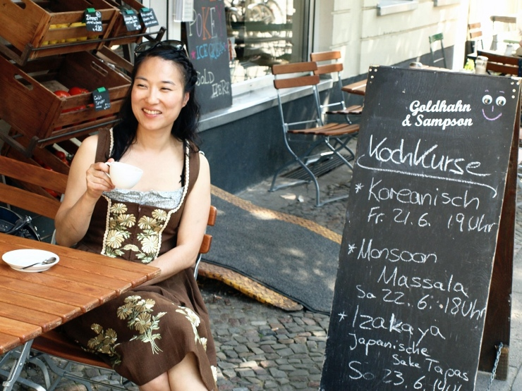

Happy Weekend: “part Korean, part American, part German, all Kimchi”
Though the skies may be darkened, the streets are not empty, and culinary excursions seem to be the thing to do. I can attest to this fact, as a giant blues-soul-rock montage of musicians are performing ’round the clock on a stage just a few meters from my window as part of Bergmannstraßenfest. As a loving member of the Kiez, I can tolerate loud tunes and folks my parents’ age sitting on my stoop, drinking mojitos out of plastic cups and chatting loudly about drum-circle politics. Stalls of South Indian fried goodies or Dutch mini pancakes make it hard to be frustrated. And if you can’t do such things in a Berlin summer, then when?
But if the chance of rain deters participation in any of the street events or outdoor markets this weekend, I’ve got a solution: stuff your face with delicious Korean-fusion. In fact, why not learn a little about Lauren Lee AKA “Fräulein Kimchi” – the proponent of the Korean taco and the Bavarian-Korean cooking course – whose appearances in Mauerpark and Markthalle 9 are bringing in the masses (even if the retelling of my Bimbibap obsession in my Seattle years elicits more often the “Bimbi – whaaa?” than an affirmative nod).
This post comes from Jessica Jungbauer of Best Wishes from Berlin, who seeks out the so-called “creatives” of the city, the culinary sort among them, initiating short auto-portraits for an interesting lens into one facet of creative engagement or another. This is about Lauren Lee, from Lauren Lee, whose motto says a lot about what is possible in a city that is becoming one blend of unexpected fusions after another: “part Korean, part American, part German, all Kimchi”. Happy weekend, eat some kimchi.
-By Kelly Miller
Lauren Lee, chef and founder of ‘Fräulein Kimchi kocht‘
|  |
| Lauren at her favorite place in Berlin, ‘Goldhahn & Sampson’ in Prenzlauer Berg |
{kind=link}
The day Korean chef Lauren Lee brought some kimchi of hers to Mauerpark in Berlin, she knew that “Berlin was finally ready for Korean-Fusion food”…
I first visited Berlin during a frosty February in 2006 and fell in love with the city. Considering that I came from Los Angeles and 25 degree weather, that was quite a feat. I decided quite spontaneously to move and 7 months later I landed in Tegel with 2 suitcases, a German-English dictionary and a lot of enthusiasm and naiveté.
What I love about Berlin is that there are still possibilities here as it is a city that is constantly in flux and reinventing itself and it allows me to change and grow with it. The Berlin I experienced 5 years ago when I first moved is quite a different place then the Berlin now and I suspect will be a new place again 5 years from today.
Originally I came to Berlin to study opera with a teacher I had met in New York and a few years ago I was helping to run a fringe opera company – Berlin International Opera – while studying and working. Of course I’ve always loved cooking and entertaining but it wasn’t until a medical reason forced me to quit singing for a while and I needed a new outlet for my creative energy.
One day I decided to wear one of my dirndls (I have a not so secret obsession with dirndls) and brought some kimchi to Mauerpark. I had a friend photograph people’s very fun reactions to eating kimchi for the first time and… voilà, ‘Fräulein Kimchi’ was born. I got secretly obsessed with introducing Korean food to all those (poor) people who have had no experience with my native cuisine and whenever I travelled I always had a small package of Korean ingredients with me. (It’s the best way to get hosted on Couchsurfing if you offer to make people a home-cooked dinner!). I’ve cooked Korean food and made kimchi for people in Finland, Denmark, Norway, France, Austria, England, Ireland, Italy and of course all throughout Germany. In the meantime, back in Berlin I started teaching cooking classes at one of my favorite foodie stores – ‘Goldhahn & Sampson’ – and catering small parties and dinners for friends and acquaintances.
What always surprises me about Berlin is how much it feels like a small town for being such a large city. I’ve been lucky in getting to know people through various circles that have really helped me along the way with developing my food passions. I got to know Kavita Meelu through mutual contacts at ‘Goldhahn & Sampson’ and cooked for one of her ‘Mother’s Mother’ meals last summer, which then led me to ‘Kitchensurfing’ which led me to ‘Street Food Thursday’ at the Martkhalle 9, well, I guess I’ve been blessed with being in the right place at the right time with some amazing people to support me.
Now I’m keeping busy with ‘Street Food Thursdays’, my kimchi making and weekly catering at ‘Soundcloud’. I am surprised at how well everything is going, but I guess Berlin is finally ready for Korean-Fusion food and… Korean Tacos, which has been my passion from the start. It’s pretty funny, when I first approached the guys at ‘Goldhahn & Sampson’ to let me teach my Korean-Mexican class a few years ago, they were fairly resistant to the idea. “Lauren,” they said, “No one will know what that is, what IS a Korean taco?” I’m happy to say, I ended up finally convincing them and now I teach my Korean-Bavarian class there as well.
In August I will be starting my own supperclub – ‘Fräulein Kimchi’s Delish Tisch’- in Prenzlauer Berg where I will offer seasonal menus with whimsical fusions between Korean, German and American food and I’m slowly, slowly toying with the idea of a ‘Fräulein Kimchi Café’…
For seat reservations to the ‘Delish Tisch’ in August, please contact frauleinkimchi@gmail.com. Be sure to follow the journey of bringing Korean food to Berlin via facebook or the website.